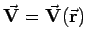
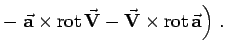

Inhalt Index DeskTop Bronstein

 Vektoranalysis und Feldtheorie Räumliche Differentialoperationen Richtungs- und Volumenableitung
Vektoranalysis und Feldtheorie Räumliche Differentialoperationen Richtungs- und Volumenableitung


In Analogie zur Richtungsableitung eines skalaren Feldes gibt es die Richtungsableitung eines Vektorfeldes. Die Richtungsableitung des Vektorfeldes  in einem Punkt P mit dem Ortsvektor  (s. Abbildung)
(s. Abbildung)
nach einem Vektor  ist definiert als Grenzwert des Quotienten
ist definiert als Grenzwert des Quotienten
| (13.30a) |
Wenn die Ableitung des Vektorfeldes in einem Punkt  nach der Richtung des Einheitsvektors von
nach der Richtung des Einheitsvektors von  mit bezeichnet wird, dann gilt:
mit bezeichnet wird, dann gilt:
| (13.30b) |
In kartesischen Koordinaten, d.h. , gilt
oder in allgemeinen Koordinaten
| = | |||
|  | (13.30d) |